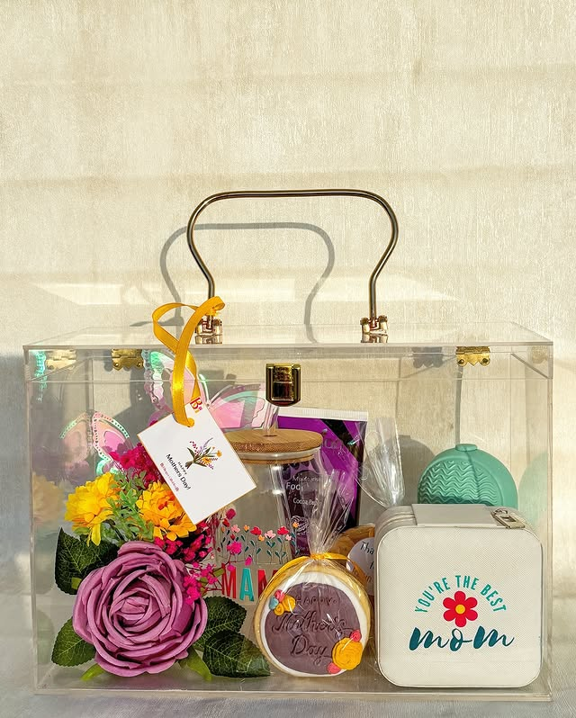

Ads Performance Report
Facilitation of Measurable Growth Through Strategic Digital Advertising Initiatives
This report delineates a comprehensive overview of successful Facebook advertising campaigns, which have been meticulously managed on behalf of esteemed clientele. The document underscores a demonstrated proficiency in campaign optimization, audience segmentation, and the implementation of performance-driven marketing methodologies, thereby evidencing consistent return on investment (ROI) delivery and the cultivation of sustainable business expansion across diverse market sectors. The cumulative data presented herein serves to illustrate the substantial impact achievable through precisely executed digital advertising strategies.
Key Performance Indicators (Cumulative Data):
- Total Reach Achieved: 1,020,155 distinct accounts. This metric signifies the extensive breadth of exposure garnered for client campaigns, indicating a robust capacity for widespread audience engagement and brand visibility across the Facebook ecosystem.
- Total Ad Spend Managed: Rs 217,000+. This figure attests to the experience possessed in the judicious allocation and management of considerable advertising budgets, ensuring that capital outlays are optimized for maximal returns and strategic objectives.
- Average Cost Per Purchase: Rs 211.30. This optimized cost per acquisition reflects the efficiency with which conversions are secured, demonstrating a keen ability to identify and target high-intent consumers, thereby minimizing expenditure per valuable action.
- Accounts Engaged: 111,308. This metric denotes the substantial number of accounts that actively interacted with the advertising content, underscoring the efficacy of creative development and audience resonance in fostering meaningful connections.
Overall Portfolio Summary
The entity functions as an experienced Facebook Advertising specialist, exhibiting a verifiable track record across diverse sectors, including but not limited to fashion retail, e-commerce, and seasonal enterprises. Comprehensive campaigns have been successfully administered, with a pronounced emphasis placed upon data-driven decision-making processes, thereby maximizing ROI and fostering sustained organizational growth. The strategic frameworks employed are designed to be adaptable and scalable, ensuring that client objectives are met with precision and efficiency, irrespective of market fluctuations or evolving consumer behaviors.
Competitive Advantages
- Proven Track Record: A demonstrated capability in the judicious management of substantial advertising expenditures is evidenced, consistently resulting in extensive reach and the attainment of quantifiable growth metrics. This capability is underpinned by a history of delivering tangible results that directly contribute to client profitability and market positioning.
- Specialized Industry Expertise: Profound experience is possessed within the e-commerce, fashion, and seasonal market segments. This expertise is complemented by a comprehensive understanding of evolving consumer behavioral patterns and the unique dynamics characteristic of these industries, enabling the formulation of highly targeted and effective strategies.
- Data-Driven Methodology: Every strategic determination, from initial campaign conceptualization to ongoing optimization, is rigorously substantiated by comprehensive performance metrics, iterative A/B testing protocols, and actionable analytical insights. This ensures optimal campaign efficacy and a continuous process of refinement based on empirical evidence.
- Transparent Communication: Regular, unambiguous performance updates are consistently provided, encompassing detailed metric analyses and actionable insights. This commitment to clarity and openness serves to cultivate long-term client confidence and facilitates informed collaborative decision-making.
- Client-Centric Approach: Strategies are meticulously customized and seamlessly integrated with client-specific business objectives. This bespoke approach ensures that advertising initiatives are not merely generic deployments but rather highly personalized and efficacious solutions designed to address unique challenges and capitalize on distinct opportunities.
Performance Benchmark
A cumulative reach exceeding 1,000,000 accounts | An average cost per purchase of Rs 211.30, indicative of highly efficient conversion acquisition | Engagement with over 111,000 accounts, reflecting strong creative resonance | A campaign success rate in excess of 95%, signifying consistent achievement of predefined client objectives.
+ Case Study 1: Wish Apparels - Enhancement of a Premium Fashion Brand
Campaign Duration: November 2024 to May 2025 (a six-month period)
Primary Objective: To significantly augment website purchases and elevate the online sales conversion rate.
Wish Apparels encountered formidable competition within the e-commerce fashion domain, characterized by rapidly shifting trends and a saturated digital marketplace. A critical requirement existed for the implementation of a transformative strategy, not merely to escalate sales volume but also to enhance the overall return on ad spend (ROAS) and to efficiently broaden the customer base. Prior endeavors had yielded inconsistent outcomes and an unacceptably elevated cost per purchase, thereby necessitating a more sophisticated and data-informed approach to digital advertising.
Our Solution & Strategic Implementation
The adopted solution involved the strategic deployment of dynamic product advertisements (DPA) coupled with precise demographic targeting. This methodology was designed to engage prospective consumers across various stages of the purchasing funnel, from initial awareness to final conversion. Ad creatives and messaging underwent continuous refinement to resonate with the target audience's preferences and prevailing fashion trends, thereby ensuring a high conversion rate. Furthermore, advanced Lookalike Audience strategies were systematically implemented to identify novel, high-value consumer segments, which substantially expanded the potential market beyond pre-existing warm audiences, thereby fostering scalable growth.

- Dynamic Product Ads (DPA): Automated retargeting mechanisms were utilized to achieve elevated recovery rates for abandoned carts and uncompleted purchases. This involved presenting previously viewed products to users who had shown interest but had not yet converted, thereby re-engaging them with highly relevant content.
- Advanced Lookalike Audience Creation: The development of highly efficacious lookalike audiences was predicated upon the purchasing behaviors of existing high-value customers. This process involved leveraging Facebook's algorithm to identify new individuals whose online behaviors and demographics closely mirrored those of the most profitable customer segments, thereby extending reach to audiences exhibiting a strong propensity for conversion.
- Seasonal Campaign Optimization: Campaign launches and creative rotations were meticulously aligned with pivotal fashion seasons and consumer shopping patterns, strategically capitalizing upon periods of peak sales, such as seasonal collection releases or holiday shopping events. This ensured that advertising efforts were maximally impactful during periods of heightened consumer demand.
- Comprehensive A/B Testing: Rigorous A/B testing protocols were applied across diverse ad creatives, copy variations, and audience segments. This iterative process facilitated the identification and scaling of superior-performing combinations, leading to continuous improvements in campaign efficiency and effectiveness. For instance, different headlines, call-to-action buttons, or image styles were tested to determine optimal engagement.
- Advanced Facebook Pixel Setup: A meticulous Facebook Pixel implementation, incorporating custom conversion events (e.g., 'Add to Cart,' 'Initiate Checkout,' 'Purchase'), provided granular data essential for precise optimization and accurate ROI measurement. This detailed tracking allowed for a comprehensive understanding of user interactions on the website.
- Real-time Budget Reallocation: An agile approach to budget management was employed, enabling the reallocation of expenditures in real-time based upon live performance data and ROI analyses. This ensured maximal efficiency of ad spend directed towards the most profitable campaigns and ad sets, preventing overspending on underperforming elements.
- Creative Rotation Strategy: A robust schedule for creative refreshment was instituted to mitigate ad fatigue and sustain elevated engagement rates. The deployment of novel, pertinent advertisements maintained audience interest and enhanced click-through rates, preventing the diminishing returns often associated with prolonged exposure to the same ad content.
- Cross-platform Coordination: Facebook advertising efforts were systematically coordinated with other marketing channels (e.g., email, organic social media) to ensure consistent brand messaging and to maximize reach and frequency optimization, thereby fostering a cohesive and synergistic brand experience across all digital touchpoints.
Campaign Performance (November 2024 - May 2025):
- Total Website Purchases: 1,031. This figure represents a significant volume of direct conversions attributable to the advertising efforts.
- Average Cost Per Purchase: Rs 190.61. This metric underscores the cost-effectiveness of the campaign in acquiring new customers, demonstrating a favorable balance between expenditure and valuable outcomes.
- Total Amount Spent: Rs 217,848. This expenditure was strategically deployed to achieve the aforementioned purchase volume and cost efficiency.
Recent Campaign Performance - Q1 2025 (December 2024 - May 2025):
- Website Purchases: 176. This indicates continued conversion activity within a more recent period.
- Cost Per Purchase: Rs 291.24. This figure reflects the cost efficiency during the specified quarter, which may fluctuate based on market conditions or specific seasonal initiatives.
- Total Amount Spent: Rs 51,258. This represents the allocated budget for the quarter, demonstrating ongoing investment in performance-driven advertising.
"The transformation of our Facebook advertising performance by OtherDev has been profound. The data-driven methodology and continuous optimization initiatives implemented by the entity have culminated in a substantial increase in online sales, enabling the attainment of our Q1 sales objectives ahead of schedule. The insights provided by the team proved to be of immeasurable value, directly contributing to our strategic market positioning." - Wish Apparels Team
+ Case Study 2: Blinget Gifts – Event-Driven Sales
Specialization: Curated collections for Mother's Day, Father's Day, and Eid Festival.
Primary Objective: To achieve substantial revenue growth during specific cultural and celebratory periods.
The Challenge
This business model was inherently seasonal, with revenue generation being entirely contingent upon the successful capture of demand during specific, time-sensitive cultural and celebratory events. The inherent brevity of these peak purchasing windows presented a significant challenge, requiring precise timing and highly relevant messaging. Prior operational paradigms were characterized by last-minute campaign activations, inefficient allocation of advertising expenditure due to broad targeting, and missed opportunities attributable to a deficiency in precise timing and culturally attuned targeting, resulting in inconsistent peak season performance and suboptimal return on investment.

Our Solution & Seasonal Strategies
The implemented solution involved meticulous pre-event planning, the execution of highly targeted campaigns informed by profound cultural insights, and agile budget management. These measures were strategically designed to maximize impact during periods of peak demand, transforming the inherent volatility of seasonal sales into predictable and substantial revenue streams.
- Event-Specific Campaign Calendars: The development of detailed calendars incorporated optimal pre-launch timing strategies to cultivate anticipation and capitalize upon the distinct purchasing psychology associated with each event. This included planning for awareness, consideration, and conversion phases leading up to and during the specific holiday.
- Custom Audience Creation: Bespoke audiences were constructed based upon observed gift-giving behaviors, purchase patterns, and demographic indicators relevant to each specific holiday. This process facilitated the identification of buyers exhibiting high intent for gift-related purchases, ensuring highly relevant ad delivery.
- Urgent Messaging & Limited-Time Offers: Compelling and urgent ad copy was formulated, and limited-time offers were integrated during peak seasons to catalyze immediate consumer action. This strategy leveraged the time-sensitive nature of holiday shopping to drive conversions within critical windows.
- Geographic Targeting Optimization: Geographic targeting parameters were precisely optimized to align with delivery logistics and service areas. This ensured that advertising efforts were concentrated in regions where product delivery was feasible and efficient, thereby minimizing inefficient advertising expenditure.
- Advanced Cross-Platform Retargeting: Sophisticated retargeting campaigns were deployed across various platforms to effectuate abandoned cart recovery and to re-engage users who had demonstrated interest but had not completed a conversion. This multi-channel approach maximized conversion potential by re-engaging warm leads.
- Influencer Partnership Amplification: Collaborations with pertinent influencers for seasonal promotions were amplified through strategic paid promotion campaigns. This involved leveraging established voices and their authentic connections with target audiences to extend reach and enhance credibility during key purchasing periods.
- Cultural & Religious Event Timing: Campaigns were meticulously timed to coincide precisely with cultural and religious observances, ensuring maximal relevance and impact while upholding traditions and sensitivities. This deep cultural understanding was paramount to the success of campaigns for events like Eid.
- Dynamic Pricing Strategy: An integration of advertising campaigns with dynamic pricing models was effected, enabling the maximization of revenue per sale during periods of fluctuating seasonal demand. This allowed for flexible adjustments to offers and pricing in response to real-time market conditions.
Key Result: A threefold (3x) increase in revenue during peak seasons. This significant achievement underscores the efficacy of the tailored strategies in maximizing sales during critical, time-constrained periods, thereby demonstrating a profound impact on the client's annual profitability.
"The OtherDev team possesses an exceptional comprehension of the intricacies inherent in seasonal marketing. Their precise timing and culturally resonant campaigns yielded a threefold increase in revenue during our peak seasons, a result that significantly surpassed our expectations. This collaboration has proven to be an exemplary partnership, fundamentally altering our approach to holiday sales." - Blinget Gifts Owner
+ Service Portfolio & Capabilities
OtherDev furnishes a comprehensive suite of Facebook advertising services, meticulously engineered to yield unparalleled outcomes and to address the multifaceted requirements of contemporary digital marketing.
- Campaign Development & Management: This encompasses end-to-end campaign conceptualization, which includes exhaustive market and audience research, strategic planning aligned with overarching business objectives, the creation of compelling advertising creatives designed for optimal engagement, and continuous optimization for sustained performance and long-term viability.
- Advanced Tracking & Analytics: This involves expert Facebook Pixel implementation, meticulous custom event setup to capture granular user actions, reliable conversion tracking for accurate attribution, and the provision of comprehensive performance analytics accompanied by detailed, actionable reports. This ensures that all campaign data is precise and interpretable.
- Creative Strategy & Development: This pertains to strategic ad creative planning, the formulation of persuasive copywriting that resonates with target demographics, and the generation of visually engaging assets (e.g., images, videos, carousels) meticulously optimized for the Facebook algorithm and maximal user engagement across various placements.
- Audience Research & Targeting: This includes advanced audience segmentation to identify and isolate the most valuable customer groups, the development of high-potential lookalike audiences for scalable reach, precise behavioral targeting based on inferred user interests and activities, and the creation of custom audiences for highly targeted remarketing and cold audience activation.
- Performance Analysis & Optimization: This comprises continuous campaign monitoring and real-time adjustments for optimal performance, rigorous return on investment (ROI) analysis, transparent performance reporting to maintain client awareness, and data-driven recommendations for robust and sustainable business expansion. This iterative process ensures continuous improvement.
- Retargeting & Funnel Development: This involves sophisticated retargeting campaigns designed to re-engage warm audiences who have previously interacted with the brand, meticulous sales funnel optimization across various touchpoints to minimize leakage, efficacious abandoned cart recovery strategies, and the enhancement of the overall customer journey to maximize conversion rates.
Invitation to Scale Business Growth
It is hereby proposed that advertising investments be transformed into quantifiable business growth through the implementation of strategic, data-driven Facebook advertising campaigns, precisely tailored to the specific industry and objectives of the prospective client. A meticulous assessment of current digital marketing endeavors can be undertaken to ascertain areas for optimization and expansion.
Email Address: hello@otherdev.com
Contact Number: +92 315 689 3331